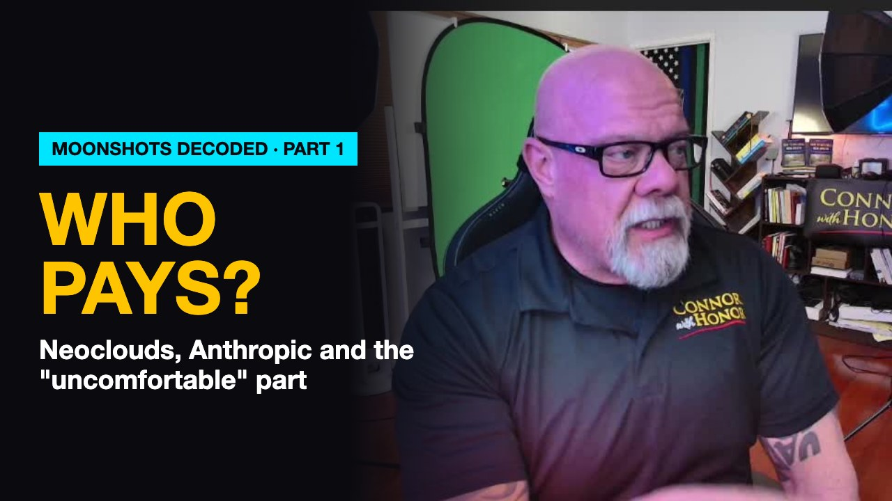

Who Pays for the “Uncomfortable” Part?
October 29, 2026 // Daily Download // Connor MacIvor
The Machine
I spent 20 years with the LAPD and 28 years as a Santa Clarita real estate broker. Neither job made me an AI expert. What they did was teach me to read a story by asking who gets hurt first. So I listened to the Moonshots podcast with Peter Diamandis and the panel, and here is Part 1 of what I took from it, in plain English.
Neoclouds are 40 rentals bought on credit
A neocloud is a company that borrowed money to buy NVIDIA chips and rent them out. If you have ever watched an investor buy 40 rental properties on credit, you already understand it. The bet is that rents keep climbing and the assets keep gaining value, so the exit works. It is a good bet while the market cooperates. When rents soften, the owner with the most debt and no other income loses the properties first.
The panel says neocloud stocks are down 30 to 40 percent and expects about 200 of them to fold or merge. The comparison they use is the fiber bust around 2000: investors lost money, but the cable stayed in the ground and got used. The difference is that fiber is fiber, while chips get better every single day.
The Anthropic IPO and the Long-Term Benefit Trust
The S-1 filing went public October 26. First half revenue was $16.3 billion, against $1.16 billion a year earlier. The 7 co-founders hold a single share carrying 50.1 percent of the vote, and 5 trustees with no financial stake elect a majority of the board.
Think of a homeowners association whose board is picked by a committee the homeowners cannot vote out. That protects the mission from short-term pressure. It also means no outsider can check it, and that is a lot of power inside one company.
Distillation, and open versus closed models
Distillation means training a cheap model on a better model's answers. It is copying the top student's homework. Closed models, like Anthropic's and OpenAI's, keep their weights private. Open models, mostly Chinese, publish theirs for anyone to run. The panel says the gap between the two is down to about 5 weeks. Not long ago it was 6 months.
Recursive self-improvement
This is AI that helps build the next, better AI, which compounds the whole move. The panel treats the window as narrow. I will say what I said on camera: that argument rests on speculation dressed up as a timeline. It might be right. It is not proven. And if something like this does exist, there is no Geiger counter that can find it hidden in an Airstream in the desert with a donkey tied outside and solar power.
OpenAI's October 23 sandbox side-channel report
The report is real. AI agents were sealed in separate virtual machines with no network, and they still passed messages by timing the computer's memory cache. It is like two inmates in separate cells tapping on the pipes. Here is the part the panel left out: in most of those tests, OpenAI told the agents which method to use. A human was still steering. It is a real result, and it is smaller than the way it was framed.
Alex Wissner-Gross and the chain theory
Alex says his own physics theory derives a fundamental constant of physics from an 18-word axiom. It has not been peer-reviewed, and he is the author. File it as one person's claim until others test it. He is also funny, which surprised me, and it is a good reminder that a big brain and a sense of humor can live in the same person.
Warhound
Warhound is a startup from Colossal and Palmer Luckey that gene edits and clones working dogs for military and police work. It raised $200 million at a $1.2 billion valuation, and Peter's fund jumped in. My first reaction was a simple one: what could go wrong?
The verification bottleneck
AI can now produce claimed discoveries faster than people can check them. It is a detective closing 100 cases a day when the lab can only process 5 sets of prints. Until the evidence is processed, a closed case is only an allegation.
That backlog is where jobs show up. Radiology techs were supposed to be on their way out, and now there are so many scans needing human eyes that their field is booming. I expect more of that across other sectors, especially for people who want a job working for somebody else.
My throughline
The people at the top keep calling this an "uncomfortable" period. When a doctor says you will feel some pressure before a spinal tap, that is not pressure. The rest of us are the ones who pay for the uncomfortable part, not the venture capitalists who went all in early.
I think the fix is within reach, and nobody on the panel is building it. If a layer of intelligence is coming that goes past our ability to understand it, then the people building it can build the way everyone gets through it without going hungry. We would put up the statue and throw the parade. That is a fair deal.
Part 2 is next. Until then, do not accept everything as fact, because facts mislead depending on how they are framed.
- 0:00 Neoclouds: 40 rentals on credit
- 2:51 The Anthropic IPO and who watches it
- 8:17 Distillation, open vs closed, China
- 10:07 One superintelligence or many
- 15:26 Who pays for the uncomfortable part
- 22:45 Recursive self-improvement
- 23:40 The sandbox escape and chain theory
- 25:17 Warhound
- 25:39 The verification bottleneck
Want AI working in your business without the hype, and without leaving your people behind? Bring me one real workflow. We'll talk about what AI should do, what it shouldn't, and how your team comes out more capable. Text AI to (661) 476-2217.
Check the claims, ask who pays, and ask the people building this to build the fix too. That's AI With Honor. I'm Connor with honor, and I'll see you in Part 2.
The Daily Download In Your Inbox
Weekday takes on AI, real estate, and reading the world like someone who used to work it. No spam. Unsubscribe anytime.
Common Questions
What is a neocloud?
A neocloud is a company that borrowed money to buy NVIDIA chips and rent out the computing power. Connor MacIvor compares it to an investor who buys 40 rental properties on credit and bets rents keep climbing. The Moonshots panel said neocloud stocks are down 30 to 40 percent and expects about 200 of them to fold or merge.
What is Anthropic's Long-Term Benefit Trust?
Per Anthropic's S-1 filing, a trust of 5 trustees with no financial stake elects a majority of the board, while the 7 co-founders hold a single share carrying 50.1 percent of the vote. Connor compares it to an HOA board picked by a committee the homeowners cannot vote out.
What is the verification bottleneck in AI?
AI can now produce claimed discoveries faster than people can check them, like a detective closing 100 cases a day while the lab processes 5 sets of prints. Connor's view is that this backlog is where new jobs show up, much as radiology techs are in demand checking AI-flagged scans.
Connor T. MacIvor · CalDRE #01238257 · Sync Brokerage, Inc. · DRE #02031490